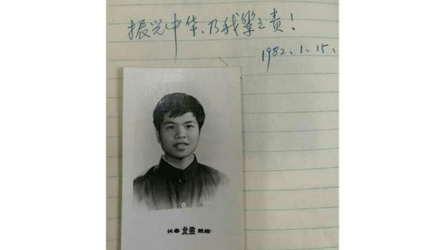
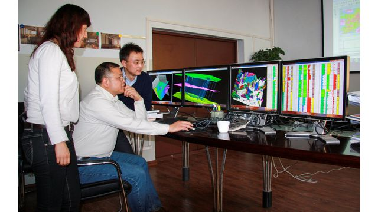
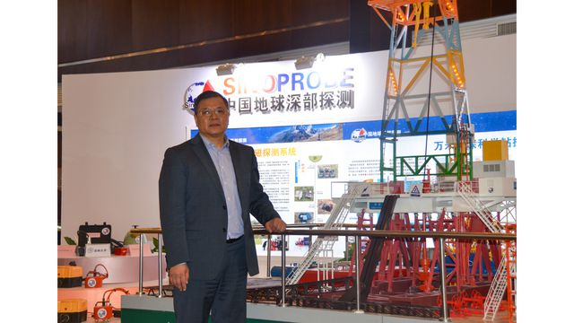
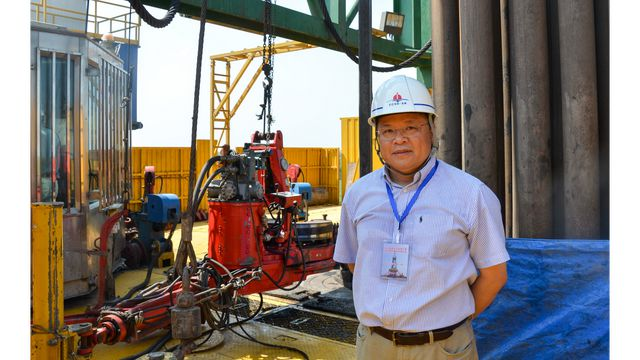
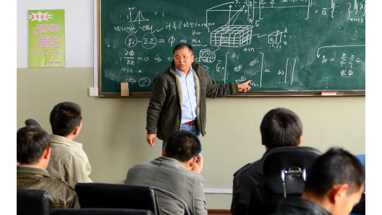

他是著名地球物理学家，他带领团队，创造多项“中国第一”，为中国“巡天探地潜海”填补多项技术空白，为深地资源探测和国防安全建设作出了突出贡献。
他曾任吉林大学地球探测科学与技术学院教授、吉林大学新兴交叉学科学部首任部长，为党和国家的教育、科研事业奋斗至生命最后一刻。
他就是“人民教育家”国家荣誉称号获得者——黄大年。

1977年，19岁的黄大年作为恢复高考后的第一批学生，考入长春地质学院（现吉林大学）。在这里，他走进了地球物理学的殿堂。

1988年，留校任教的黄大年递交了入党申请书，字里行间流露着满腔报国真情。此后黄大年攻读不辍，一步步走上世界舞台。2009年，他放弃国外优越条件回到祖国任教。
取舍之中，照鉴情怀，黄大年深知自己的根之所在。

“透视”地球，燃烧自己。回国7年，黄大年带领科研团队突破国外高精度探测装备技术封锁，推动中国真正进入“深地时代”。

作为享誉海内外的卓越科学家，黄大年关注的不仅仅是当下的科研，而是中国未来30年、50年在航空地球物理领域要达到的目标——向深地、深海、深空进军。

沿着黄大年的足迹，吉林大学有越来越多像他一样的“科研疯子”拿起了接力棒，凝聚团队力量在“重力梯度仪研制”“油气多元勘探理论与开发”“空－地电磁、重磁探测技术”“非常规油气勘探”等研究方面取得重要进展。

人们缅怀黄大年，因为，他的生命里赫然刻印着8个大字：心有大我，至诚报国！